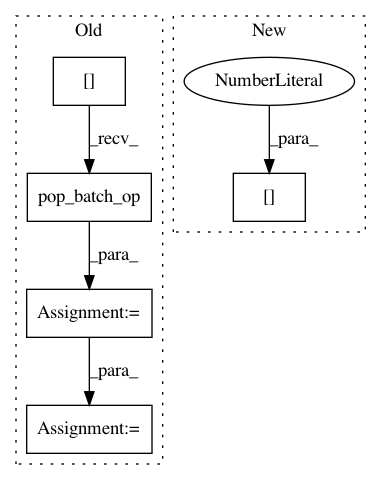

53633acd7c861fd73e3954088a48d0ac8dc42895,niftynet/application/autoencoder_application.py,AutoencoderApplication,connect_data_and_network,#AutoencoderApplication#Any#Any#,111
Before Change
name=self.action_param.optimiser)
self.optimiser = optimiser_class.get_instance(
learning_rate=self.action_param.lr)
data_dict = self.get_sampler()[0].pop_batch_op()
image = tf.cast(data_dict["image"], dtype=tf.float32)
net_output = self.net(image, is_training=True)
loss_func = LossFunction(loss_type=self.action_param.loss_type)
data_loss = loss_func(net_output)
loss = data_loss
After Change
self.action_param.spatial_window_size + (1,)
dummy_image = tf.zeros(image_size)
net_output = self.net(dummy_image, is_training=False)
data_dict = self.get_sampler()[0][0].pop_batch_op()
real_code = data_dict["feature"]
real_code = tf.reshape(real_code, net_output[-1].get_shape())
partially_decoded_sample = self.net.shared_decoder(
In pattern: SUPERPATTERN
Frequency: 3
Non-data size: 5
Instances
Project Name: NifTK/NiftyNet
Commit Name: 53633acd7c861fd73e3954088a48d0ac8dc42895
Time: 2017-11-01
Author: eli.gibson@gmail.com
File Name: niftynet/application/autoencoder_application.py
Class Name: AutoencoderApplication
Method Name: connect_data_and_network
Project Name: NifTK/NiftyNet
Commit Name: 53633acd7c861fd73e3954088a48d0ac8dc42895
Time: 2017-11-01
Author: eli.gibson@gmail.com
File Name: niftynet/application/gan_application.py
Class Name: GANApplication
Method Name: connect_data_and_network
Project Name: NifTK/NiftyNet
Commit Name: 01f1bcb376dfd967603c785a255f927dea2712b6
Time: 2017-11-15
Author: wenqi.li@ucl.ac.uk
File Name: demos/BRATS17/brats_segmentation.py
Class Name: BRATSApp
Method Name: connect_data_and_network